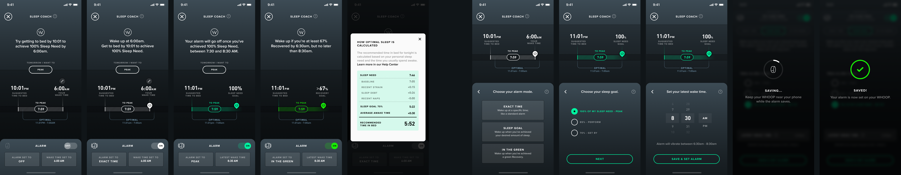

This story is about establishing a design vision using insights and principles, then building the interface design toward that vision.
Designing the WHOOP Sleep Coach
Objective
The aim of this project was increase Sleep Coach engagement and overall member retention with a redesign the existing Sleep Coach experience that included a few key objectives:
- Integrate a wake alarm via the new WHOOP 4.0 haptic facility (aka “vibration motor”)
- Extend sleep coaching by including bed & wake time recommendations
- Offer more engaging sleep recommendations via push notifications
The release of this feature was planned as one of the flagship features along with the WHOOP 4.0 announcement. Success for this redesign included supporting a critical go-to-market campaign for WHOOP 4.0 as well as increased feature engagement. If more members use Sleep Coach, WHOOP will retain more members over the course of a year; 12-month retention is a critical business metric for WHOOP. The challenge we faced was determining how to make a sleep coaching experience engaging for at least an entire year.
⭐
Taking a step back…
The purpose of the Sleep Coach feature is to provide members with simple bedtime planning based on the amount of sleep needed. In other words, Sleep Coach helps members get enough sleep. The original feature simply allowed members to set a wake time and then Sleep Coach would calculate a recommended bedtime.
While improving sleep was the most popular outcome members cited, Sleep Coach engagement was historically low. Additionally, members would frequently cite wanting better sleep coaching when canceling their membership. Poor feature engagement and a strong pattern of anecdotes of wanting sleep coaching gave us signal that improving Sleep Coach would be a good investment.
Here are the original designs:
The Sleep Coach v1 Design
Going into the design process we leveraged a few key insights to help guide the solution:
- Most members would discover Sleep Coach during first time use, but did not return on a frequent basis. This signaled that there was an issue with stickiness.
- Through interviews, members cited that Sleep Coach would often set unrealistic bedtimes (often times too early). These recommendations would appear in the Sleep Coach UI as well as in push notifications. This made members feel that the feature was not made for them, which likely contributed to the poor feature retention issue.
- Members also cited that once they “got the hang of sleep” that using Sleep Coach wasn’t as valuable over the long-term. This was also a reason contributing to poor retention.
Resulting strategy
Our initial focus was to solve the long-term stickiness problem. Could we create an experience that would keep a member engaged for a long period of time?
- While Sleep Coach had been providing bedtime recommendations based on the amount of sleep needed, it was missing a key part to the story; sleep consistency. Data Science research showed that members who sleep sufficiently and consistently yielded the healthiest sleep. There was an opportunity for Sleep Coach to help the member dial in an ideal sleep schedule.
- Through continuous discovery we learned that one of the most important interactions with the WHOOP product occurs in the morning. Members wake up and check their WHOOP app to review Sleep and Recovery scores. How might we leverage this key ritual? We had already been discussing the notion of building a vibration-based alarm with the new WHOOP 4.0 device. We expanded upon this idea and created a customizable alarm that allows members to set the alarm to go off based on the amount of sleep received. Instead of strictly being woken up at 7:00am, for example, members could customize Sleep Coach to wake them up once they received 100% of their sleep needed. Light bulb!
The resulting experience is one that provides ongoing value in 2 ways; a novel alarm and continuous sleep coaching. The aim was that this would provide a feature that members continuously check for guidance and rely on for their morning alarm; a good one-two punch to improve long-term feature retention.

The New Sleep Coach v2 Design
The conceptual design challenge
A key question we needed to answer was around how the Sleep Coach would take shape and how the alarm would be oriented. Early concepts had this going in many many different directions. Should the focus of the feature actually just be the alarm? What is sleep coaching all about anyway? How should the smart alarm be presented? Are members actually willing to sleep in and trust a dynamic alarm?
Scroll right to view early concepts:
A few exploratory Sleep Coach concepts. ( View in Figma).
A guiding principle that helped steer us in the right direction was that the experience should be as passive and frictionless as possible. This principle stemmed from an assumption that forcing the member to set their alarm each night would be enough friction to cause retention issues. We made this assumption because many other WHOOP features that are passive/frictionless perform far better in terms of engagement than one’s that require “work”. The ideal usage would be that the member configures their alarm and can rest easy knowing that it will wake them up each day at the ideal or intended time.
User research showed us that waking up too late due to the dynamic alarm was the greatest fear in using such a feature, which makes sense. No one wants to miss that early meeting or a flight, for example. We addressed this by landing on solution that allowed members to set their “latest wake time”. This way they could rest easy knowing that the alarm would wake them up once they hit their sleep goal or at the latest possible time they were willing to wake up. This “safety net” was critical in getting members to buy into using such a novel feature.
Finally, given a more passive architecture for the alarm system, this allowed us to focus on “coaching” for the main part of the Sleep Coach UI. Members could set their alarm once and then simply check Sleep Coach for bedtime planning. This brought the insights forward and pushed the settings down a layer.
Scroll right to view final UI samples:

Final Sleep Coach UI Design Samples. ( View in Figma).